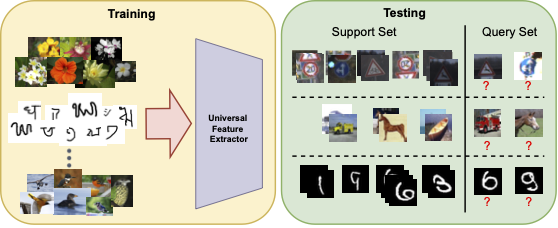
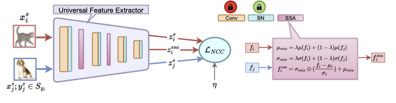

Cross-Domain Few-Shot Learning (CD-FSL) aims to recognize new classes from unseen domains, given limited training samples. Majority of the state-of-the-art approaches for this task introduce new task-specific additional parameters for adapting to the novel task, which involves changing the trained model architecture, in addition to increasing the number of model parameters. The first contribution of this work is to revisit existing approaches like modifying the Batch Normalization affine parameters and the scale hyperparameter in cosine similarity based softmax loss for adapting the trained model to new tasks, without changing the model architecture. Secondly, to aid model learning with few examples per class, we propose to augment the data of each class with the styles of semantically similar classes. Extensive evaluation on the challenging Meta-Dataset shows that this simple framework is very effective for the CD-FSL task. We also show that the Similar-class Style Augmentation module can be seamlessly integrated with existing approaches to further improve their performance, thus establishing state-of-the-art in this challenging area.
In CD-FSL, a universal feature extractor \(F\) is trained on labeled data from multiple source domains \(D_\text{train}\). At test time, it must adapt to N-way K-shot tasks sampled from unseen classes in unseen domains \(D_\text{test}\). Each task \(\mathcal{T} = (\mathcal{S}, \mathcal{Q})\) consists of a labeled support set \(\mathcal{S}\) and an unlabeled query set \(\mathcal{Q}\).
Most state-of-the-art methods (FLUTE, URL, TSA) handle this by introducing task-specific learnable modules, which either increase model parameters or change the trained architecture. This is undesirable in many practical settings. SSA-BNS addresses CD-FSL without any architectural changes or extra parameters, by revisiting two under-explored components: BatchNorm adaptation and the cosine similarity scale factor.


Given the universal feature extractor, we adapt only the BatchNorm affine parameters \(\{\gamma, \beta\}\) at each layer \(l\), without changing any other part of the model. Batch-normalized activations are:
\begin{align} f^l_\text{BN} = \gamma^l \hat{f}^l + \beta^l; \quad \hat{f}^l = \frac{f^l - \mu^l}{\sqrt{(\sigma^l)^2 + \epsilon}} \end{align}
The BN parameters \(\{\gamma, \beta\}\) are optimized to minimize the Nearest Centroid Classifier (NCC) loss over the support set:
\begin{align} \min_{\gamma, \beta} \; \frac{1}{n_\mathcal{S}} \sum_{(x_i^s, y_i^s) \in \mathcal{S}} \mathcal{L}_\text{NCC}(z_i^s, y_i^s; \eta) \quad \text{where} \quad z_i^s = F(x_i^s) \end{align}
Class centroids are the mean of support features per class:
\begin{align} \mathbf{c}_k = \frac{1}{|\mathcal{S}_k|} \sum_{x_i^s \in \mathcal{S}_k} z_i^s \end{align}
The NCC loss uses cosine similarity with a scale hyperparameter \(\eta\):
\begin{align} p(y=k \mid z_i^s; \eta) = \frac{e^{\eta \cos\theta_{i,k}}}{\sum_{j=1}^{C} e^{\eta \cos\theta_{i,j}}} \end{align}
Prior works URL and TSA fixed \(\eta = 10\). In CD-FSL, the test domain can be very different from training, so cosine similarities tend to be low. We find that \(\eta = 25\) is significantly better: it expands the probability range so that correctly classified samples receive high confidence without the collapse seen at \(\eta = 50\) (which causes rapid overfitting on the support set within ~10 iterations).
To overcome limited support data, we augment each sample with the style (channel-wise feature statistics) of a semantically similar class sample. Class similarity is measured via cosine similarity of centroids:
\begin{align} \text{sim}(\mathbf{c}_i, \mathbf{c}_j) = \frac{\mathbf{c}_i^T \mathbf{c}_j}{\|\mathbf{c}_i\| \|\mathbf{c}_j\|} \end{align}
The similar class set for class \(k\) is:
\begin{align} \mathcal{S}_k = \{t \mid \text{sim}(\mathbf{c}_t, \mathbf{c}_k) > \tau;\; t = 1,\ldots,C\} \end{align}
For sample \(x_i\) of class \(y_i\), we randomly pick \(x_j\) from a similar class \(y_j \in \mathcal{S}_{y_i}\) and mix their intermediate feature statistics at layer \(l\):
\begin{align} \mu_\text{ssa}(f_i; f_j) &= \lambda\,\mu(f_i) + (1-\lambda)\,\mu(f_j) \\ \sigma_\text{ssa}(f_i; f_j) &= \lambda\,\sigma(f_i) + (1-\lambda)\,\sigma(f_j) \\ f_i^\text{ssa} &= \sigma_\text{ssa} \odot \frac{f_i - \mu(f_i)}{\sigma(f_i)} + \mu_\text{ssa} \end{align}
The content of \(x_i\) is preserved in \(f_i^\text{ssa}\), so the augmented sample retains its class label \(y_i\). The final SSA-BNS objective jointly minimizes NCC loss on real and augmented features:
\begin{align} \min_{\gamma, \beta} \; \frac{1}{2n_\mathcal{S}} \sum_{(x_i^s, y_i^s)} \left[ \mathcal{L}_\text{NCC}(z_i^s, y_i^s; \eta) + \mathcal{L}_\text{NCC}(z_i^\text{ssa}, y_i^s; \eta) \right] \end{align}
SSA is inserted after the first two ResNet blocks with \(\lambda = 0.5\) and similarity threshold \(\tau = 0.7\). No additional parameters are introduced.
We evaluate on the Meta-Dataset benchmark (8 seen + 5 unseen domains) using a ResNet-18 universal feature extractor. Average accuracy and 95% confidence interval are reported over 600 tasks.
| Dataset | SUR | URT | FLUTE | tri-M | URL* | TSA* | SSA-BNS | TSA*+SSA |
|---|---|---|---|---|---|---|---|---|
| ImageNet | 56.2±1.0 | 56.8±1.1 | 58.6±1.0 | 51.8±1.1 | 58.8±1.1 | 59.5±1.0 | 56.6±1.0 | 58.9±1.1 |
| Omniglot | 94.1±0.4 | 94.2±0.4 | 92.0±0.6 | 93.2±0.5 | 94.5±0.4 | 94.9±0.4 | 95.2±0.5 | 95.6±0.4 |
| Aircraft | 85.5±0.5 | 85.8±0.5 | 82.8±0.7 | 87.2±0.5 | 89.4±0.4 | 89.9±0.4 | 89.6±0.4 | 90.0±0.5 |
| Birds | 71.0±1.0 | 76.2±0.8 | 75.3±0.8 | 79.2±0.8 | 80.7±0.8 | 81.1±0.8 | 81.8±0.8 | 82.2±0.7 |
| Textures | 71.0±0.8 | 71.6±0.7 | 71.2±0.8 | 68.8±0.8 | 77.2±0.7 | 77.5±0.7 | 76.4±0.7 | 77.6±0.7 |
| Quick Draw | 81.8±0.6 | 82.4±0.6 | 77.3±0.7 | 79.5±0.7 | 82.5±0.6 | 81.7±0.6 | 82.8±0.6 | 82.7±0.7 |
| Fungi | 64.3±0.9 | 64.0±1.0 | 48.5±1.0 | 58.1±1.1 | 68.1±0.9 | 66.3±0.8 | 66.7±0.8 | 66.6±0.8 |
| VGG Flower | 82.9±0.8 | 87.9±0.6 | 90.5±0.5 | 91.6±0.6 | 92.0±0.5 | 92.2±0.5 | 92.8±0.6 | 93.0±0.5 |
| Traffic Sign | 51.0±1.1 | 48.2±1.1 | 63.0±1.0 | 58.4±1.1 | 63.3±1.1 | 82.8±1.0 | 77.9±1.1 | 84.9±1.1 |
| MSCOCO | 52.0±1.1 | 51.5±1.1 | 52.8±1.1 | 50.0±1.0 | 57.3±1.0 | 57.6±1.0 | 56.1±0.9 | 58.1±1.0 |
| MNIST | 94.3±0.4 | 90.6±0.5 | 96.2±0.3 | 95.6±0.5 | 94.7±0.4 | 96.7±0.4 | 98.3±0.5 | 98.5±0.4 |
| CIFAR-10 | 66.5±0.9 | 67.0±0.8 | 75.4±0.8 | 78.6±0.7 | 74.2±0.8 | 82.9±0.7 | 79.4±0.7 | 82.9±0.7 |
| CIFAR-100 | 56.9±1.1 | 57.3±1.0 | 62.0±1.0 | 67.1±1.0 | 63.5±1.0 | 70.4±0.9 | 69.0±0.9 | 70.8±0.9 |
| Avg seen | 75.9 | 77.4 | 74.5 | 76.2 | 80.4 | 80.4 | 80.2 | 80.8 |
| Avg unseen | 64.1 | 62.9 | 69.9 | 69.9 | 70.6 | 78.1 | 76.1 | 79.0 |
| Avg all | 71.4 | 71.8 | 72.7 | 73.8 | 76.6 | 79.5 | 78.7 | 80.1 |
Table 1. Average accuracy (%) over 600 tasks on Meta-Dataset. * indicates methods that use additional parameters beyond the feature extractor. SSA-BNS uses no additional parameters and outperforms URL with 262K extra parameters. TSA*+SSA achieves the best overall average.
| SSA | BNS (η) | Aircraft | Fungi | CIFAR-100 | MSCOCO |
|---|---|---|---|---|---|
| ✗ | ✗ | 87.0 | 65.6 | 59.9 | 53.1 |
| ✗ | η=10 | 89.1 | 66.0 | 66.9 | 54.5 |
| ✗ | η=25 | 89.5 | 66.4 | 68.4 | 55.7 |
| ✗ | η=50 | 89.5 | 66.2 | 67.7 | 55.4 |
| ✓ | η=25 | 89.6 | 66.7 | 69.0 | 56.1 |
Table 2. BN adaptation with η=25 consistently outperforms η=10 (default in URL/TSA). Adding SSA further improves performance across both seen and unseen domains.
| Augmentation | Aircraft | Fungi | CIFAR-100 | MSCOCO |
|---|---|---|---|---|
| RandAugment | 88.8 | 65.2 | 66.9 | 55.2 |
| MixUp | 88.4 | 66.3 | 67.9 | 54.6 |
| Feature MixUp | 88.9 | 66.3 | 68.3 | 55.3 |
| Random MixStyle | 89.6 | 66.2 | 68.2 | 55.3 |
| SSA (Proposed) | 89.6 | 66.7 | 69.0 | 56.1 |
Table 3. SSA outperforms all compared augmentation techniques. Restricting style mixing to semantically similar classes (SSA) consistently beats class-agnostic Random MixStyle.
| Method | Additional parameters | Trainable parameters |
|---|---|---|
| FLUTE | 32K | 32K |
| URL | 262K | 262K |
| TSA | 1482K | 1482K |
| TSA+SSA | 1482K | 1482K |
| SSA-BNS | None | 9.6K |
Table 4. SSA-BNS introduces no additional parameters, training only the existing BN affine parameters (9.6K in ResNet-18). It outperforms URL which adds 262K parameters, using 154x fewer trainable parameters than TSA.
@InProceedings{sreenivas2023ssabns,
author = {Sreenivas, Manogna and Biswas, Soma},
title = {Similar Class Style Augmentation for Efficient Cross-Domain Few-Shot Learning},
booktitle = {CVPR Workshops},
year = {2023}
}